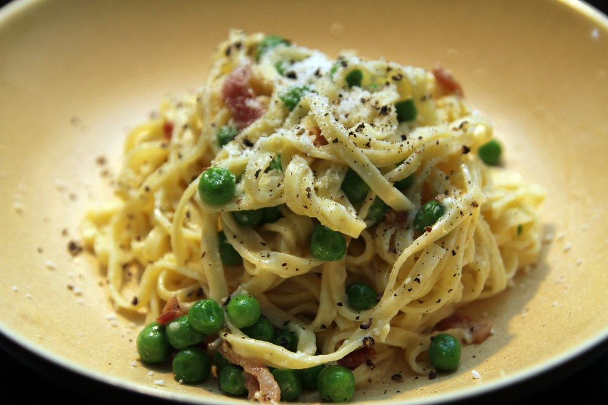

Bacon Carbonara

Description
A very simple Carbonara, best made with leftover bacon for a quick evening meal.
Ingredients
- Linguine - 1 box
- Eggs - 2
- Grated Parmesan - 1 cup
- Cooked Bacon - 6 pieces chopped finely
- Green Peas - 1 cup
- Salt
- Freshly Cracked Pepper
Steps
- Bring a pot of water to boil
- Cook Linguine as directed on package, generally 7-9 minutes.
- While linguine cooks, prepare peas as you prefer (I like to steam in the microwave) and combine eggs and the parmesan (leave aside some for topping) thouroughly to make the topping.
- Drain linguine, leaving about 1/4 cup of the pasta water for the sauce. Return pasta to the pot.
- Add the sauce while stirring quickly and constantly until it is evenly spread and cooked on the pasta. It should be silky smooth if you stir quickly and leave some of the pasta water.
- Serve topped with more cheese, peas, and chopped bacon.